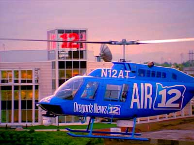

KPTV Scrapbook - 1990s
Memorable scenes from the past half-century.
|
1996 KPTV
relocates from her home of 44 years to a brand new facility on the east
bank of the Willamette River, between the Marquam and Ross Island bridges. |
|
1996 A
nighttime view of the same building. The large "12" and "UPN"
symbol in the tower are easily seen from the Marquam Bridge and downtown
Portland. |
|
1996
The "channel 12" sign, which was located above the garage door
at the SW Portland facility, is repaired and moved to the front entrance
of the new building. The old blue glass is replaced with red, and a UPN
network logo is ordered and mounted beneath. |
|
 |
| 1996
KPTV
joined
the
helicopter
wars
with
"Air-12,"
used
by
traffic
reporter
Tony
Martinez
during
"Good
Day
Oregon,"
and
for
breaking
news
where
a
view
from
above
could
help
tell
the
story. |
ONTO
THE 2000S>>
<<BACK
TO THE 1980S
BACK
TO
SCRAPBOOK

This
page
last
updated
on
August 23, 2025
|